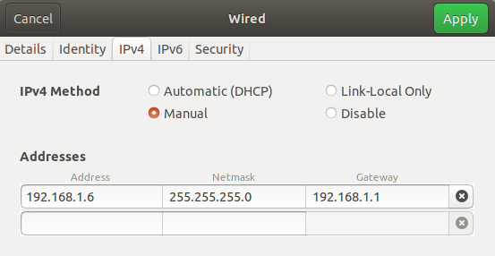
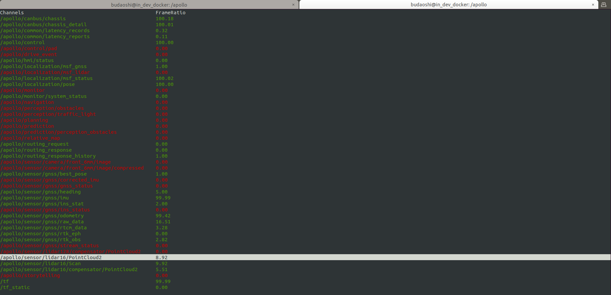
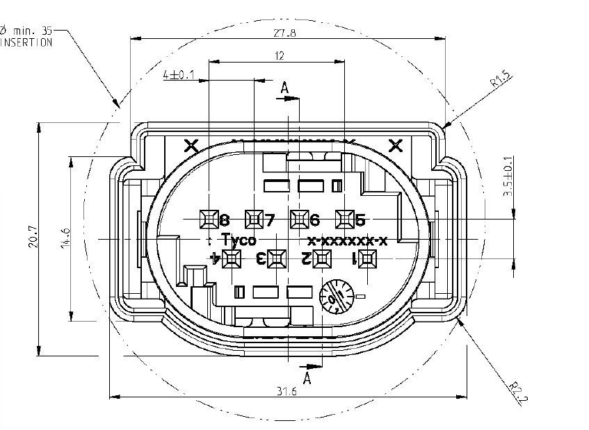
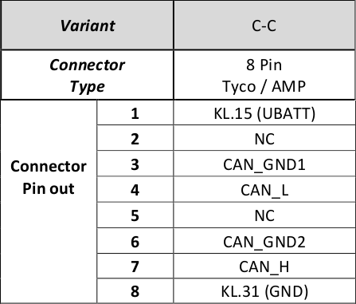
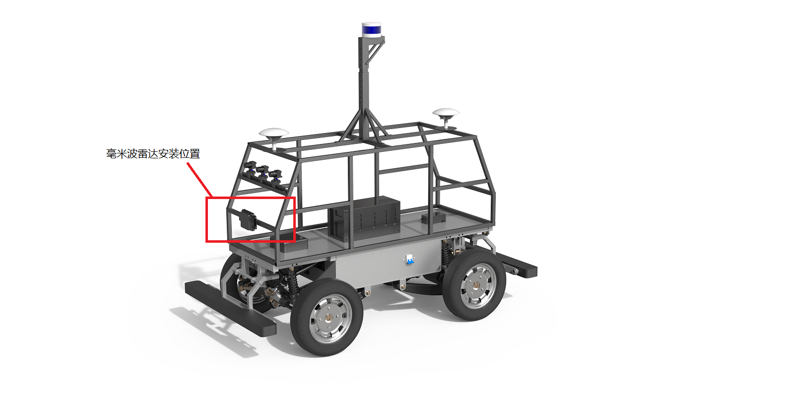
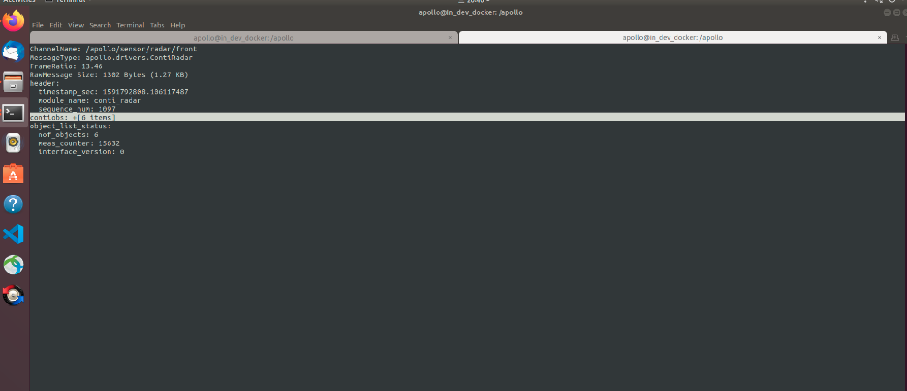
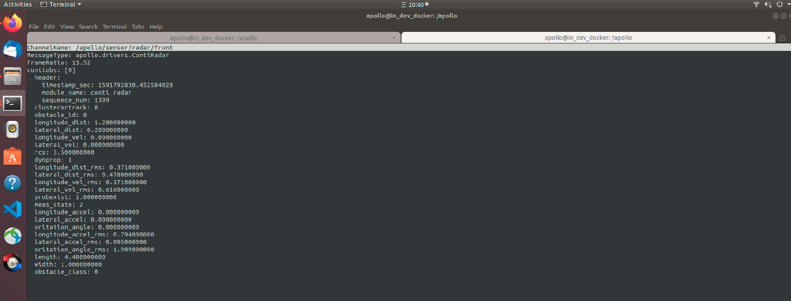
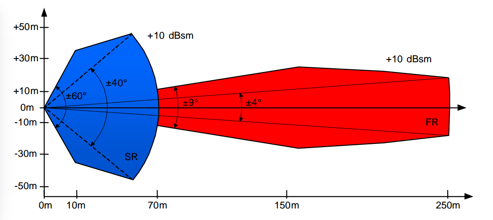

基于激光雷达的封闭园区自动驾驶搭建–感知设备集成¶
概览¶
该用户手册旨在帮助用户完成激光雷达感知设备的安装、集成及数据验证。
前提条件¶
完成了循迹搭建–车辆循迹演示
激光雷达安装与数据验证¶
注意： 针对Standard、Advanced用户，激光雷达默认已集成好，直接从激光雷达数据的验证章节开始进行数据验证即可
激光雷达型号：80-VLP-16（velodyne 16线激光雷达）
更多详细参数可参考：https://velodynelidar.com/vlp-16.html

激光雷达的安装固定¶
16线激光雷达要牢靠固定安装在车顶部，建议激光雷达对地高度1.5～1.8米，水平放置，精度在2度以内。安装位置如下图：

安装激光雷达时线缆方向朝向车辆的正后方。
激光雷达与车辆的接线¶
请按照以下步骤进行激光雷达一拖三线缆的安装。
1.线缆端口及定义¶

端口号 |
端口名称 |
|---|---|
端口1 |
8pin公头 |
端口2 |
授时接口 |
端口3 |
网线接口 |
端口4 |
12V+接口 |
端口5 |
GND接口 |
2.确保整车断电¶
3.将端口1(8pin公头)与激光雷达本体上的8pin母头连接¶
连接完成后，效果如下图所示：

4.将激光雷达电源接口(端口4、端口5)接入车上的12V接线盒¶
注意：电源接反会烧毁激光雷达
将端口4(12V+)接入车上12V电源接线盒的12V+
将端口5(GND)接入车上12V电源接线盒的GND

5.将端口2(授时)与IMU的授时端口相连¶
端口具有防反插功能，请确认正反后再进行连接
6.将端口3(网线接口)通过网线与工控机相连¶
通过网线，将工控机上的Ethernet接口与端口3连接
工控机有两个Ethernet接口，一个用于给工控机上网，一个用于连接激光雷达，用户自行指定即可
7.再次确认上述安装步骤¶
请务必再次确认正确执行了上述安装步骤，电源线接反会烧毁激光雷达，确认无误后才可以上电，至此激光雷达线束接线完成
激光雷达的配置¶
1.修改工控机IP地址¶
激光雷达的默认IP地址是192.168.1.201，通过网线与工控机Ethernet接口连接，将该Ehternet接口的IP修改为固定IP，且与激光雷达IP处在同一网段，即
192.168.1.xx，一个示例配置如下图所示：
激光雷达的相关参数配置：在浏览器中输入激光雷达ip地址，打开激光雷达配置界面， 将
Host IP Address修改为255.255.255.255，将Data Port修改为2369，将Telemetry Port修改为8309，点击set按键、Save Configuration按键保存配置。
激光雷达数据的验证¶
1. 编译项目，启动Dreamview¶
进入docker环境，用gpu编译项目，启动DreamView
cd /apollo
bash docker/scripts/dev_start.sh
bash docker/scripts/dev_into.sh
bash apollo.sh build_opt_gpu
bash scripts/bootstrap.sh
2. 启动所需模块¶
在浏览器中打开
(http://localhost:8888)，选择模式为Dev Kit Debug， 根据车辆铭牌信息选择对应的车型(详情见下表)，在Module Controller标签页启动GPS、Localization、Transform模块。铭牌信息
车型选择
Apollo D-KIT Lite
dev_kit
Apollo D-KIT Standard
dev_kit_standard
Apollo D-KIT Advanced(NE-S)
dev_kit_advanced_ne-s
Apollo D-KIT Advanced(SNE-R)
dev_kit_advanced_sne-r
定位模块启动后，需要接收定位数据，需要等待约1分钟左右。打开新的终端，并使用
bash docker/scripts/dev_into.sh命令进入docker环境，在新终端中输入cyber_monitor命令查看tf、tf_static、/apollo/localization/pose数据，这三个数据在cyber_monitor中均显示为绿色代表定位模块启动成功。(关于cyber_monitor更详细使用，请参考CyberRT_Developer_Tools)
在dreamview中启动
lidar模块
3. 检查lidar数据是否正确¶
使用
cyber_monitor，查看激光雷达数据是否正常输出，并使用上下方向键选择channel，使用右方向键查看channel详细数据，数据无异常则说明激光雷达适配成功单激光雷达用户用户，请检查如下channel是否正常输出
序号
channel
帧率
1
/apollo/sensor/lidar16/PointCloud210Hz
2
/apollo/sensor/lidar16/Scan10Hz
3
/apollo/sensor/lidar16/compensator/PointCloud210Hz

三激光雷达用户用户，请检查如下channel是否正常输出
序号
channel
帧率
1
/apollo/sensor/lidar16/back/PointCloud210Hz
2
/apollo/sensor/lidar16/left/PointCloud210Hz
3
/apollo/sensor/lidar16/right/PointCloud210Hz
4
/apollo/sensor/lidar16/fusion/PointCloud210HZ
5
/apollo/sensor/lidar16/compensator/PointCloud210Hz
毫米波雷达安装与数据验证(根据自身需求配置)¶
注意： 在目前的感知方案中，没有融合毫米波雷达数据，对于没有二次开发需求的用户可以不配置毫米波；对于有二次开发需求的用户，可按照本章节内容配置毫米波雷达
毫米波雷达型号：continental AS 408-21
continental AS 408-21简介：ARS408-21 是大陆 40X 毫米波雷达传感器系列中最新推出的高端产品，可以适用于不同的应用场景。ARS 408-21 很好的处理了测量性能与高安全性之间的矛盾，可实时检测目标的距离并根据当前车速判断是否存在碰撞风险可靠；具有自动故障检测功能，可识别传感器问题，并自动输出故障码鲁棒、轻量化设计；通过使用相对简单的雷达测量技术，以及在汽车行业的深度研发和批量生产基础，可以保证产品鲁棒和轻量化性能。

毫米波雷达接口及线序¶
continental AS 408-21传感器采用12V直流供电，使用CAN通信接口。使用时，通过如下图所示的连接线缆将传感器CAN通信接口与Apollo的CAN1口连接，电源接口接入12V直流电源(车辆上提供12V电源接线盒)，注意正负极。

传感器接口及定义如下图所示：其中，端口1接12V直流电源；端口8接GND；端口4接CAN_L；端口7接CAN_H。


毫米波雷达CAN接口与工控机的CAN1接口连接，如下图所示：

毫米波雷达的安装固定¶
传感器应安装在车前方中心处，当人正向面对车辆正前方时，传感器的正面朝向人，传感器的连接口朝向人的右手边，如下图所示：


毫米波雷达要牢靠固定在车身上，连接到毫米波雷达的接头要牢靠接插。离地面高0.5米，不能向下倾斜，向上仰0-2度以内，高度误差±0.2米，俯仰角误差0-2度（向上仰小于2度，不能向下倾斜），翻滚角误差±2度（radar左右两侧的平齐程度），航向角误差±2度（radar是否正对前方）。
毫米波雷达的配置及启动¶
由于只使用了前向毫米波，需要在配置文件modules/drivers/radar/contiradar/dag/conti_radar.dag中删除后向毫米波雷达（rear components）的相关配置，否则，由于后向毫米波雷达使用的can 2，而我们的socket can没有can 2将会导致canbus无法正常启动。修改后的
conti_radar.dag文件内容如下：module_config { module_library : "/apollo/bazel-bin/modules/drivers/radar/conti_radar/libconti_radar.so" components { class_name : "ContiRadarCanbusComponent" config { name: "conti_radar_front" config_file_path: "/apollo/modules/drivers/radar/conti_radar/conf/radar_front_conf.pb.txt" } } }
进入can卡目录启动can卡
cd ~/SocketCan/ bash start.sh
正确启动Apollo及DreamView，选择模式为
Dev Kit Debug， 选择车型为Dev Kit，并打开radar模块开关，如下图所示：使用
cyber_monitor工具，查看/apollo/sensor/radar/front数据


主要参数的含义如下表所示：
参数
含义
longitude_dist距目标的纵向距离
lateral_dist距目标的横向距离
longitude_vel目标的纵向速度
lateral_vel目标的横向速度
毫米波雷达数据的验证¶
纵向距离(
longitude_dist)/横向距离(lateral_dist)的验证：该传感器默认使用长距离模式，检测距离为0.2~250m，在车辆正前方检测距离范围内，分别放置障碍物，查看/apollo/sensor/conti_radar话题中的longitute_dist、lateral_dist数据是否正常(单位m)。下图中红色部分为长距离模式下传感器检测范围，误差在+/-0.4m内为正常。
纵向速度(
longitude_vel)/横向速度(lateral_vel)的验证：使得目标物体以固定速度在检测范围内运动，检测数据是否在误差允许有范围内。该传感器各项参数的测量范围及分辨率如下图所示：

NEXT¶
现在，您已经完成激光雷达感知设备集成，接下来可以开始基于激光雷达的封闭园区自动驾驶搭建–感知设备标定
常见问题¶
1. 无法打开Lidar配置网页¶
一般情况下只要Lidar IP、工控机与Lidar连接的网口IP处于相同号段就可以在浏览器中打开配置网页，如果确认本地IP已经正确修改还不能打开配置页面，请确认Lidar的IP地址是否被修改，可以下载wireshark来查看Lidar IP